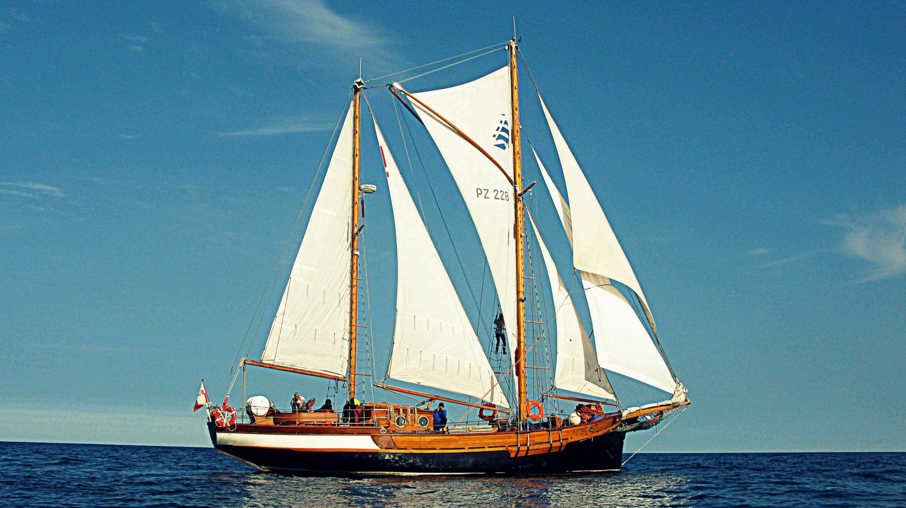
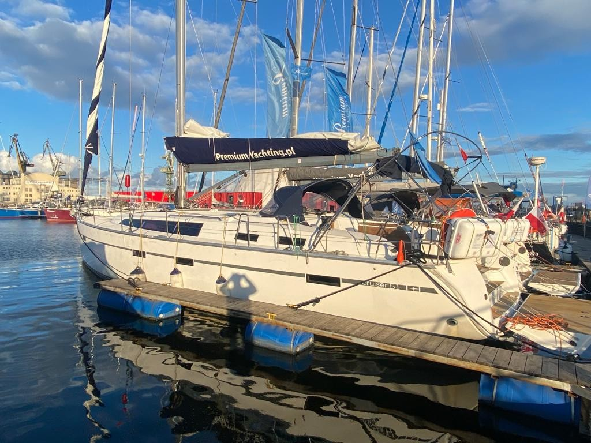
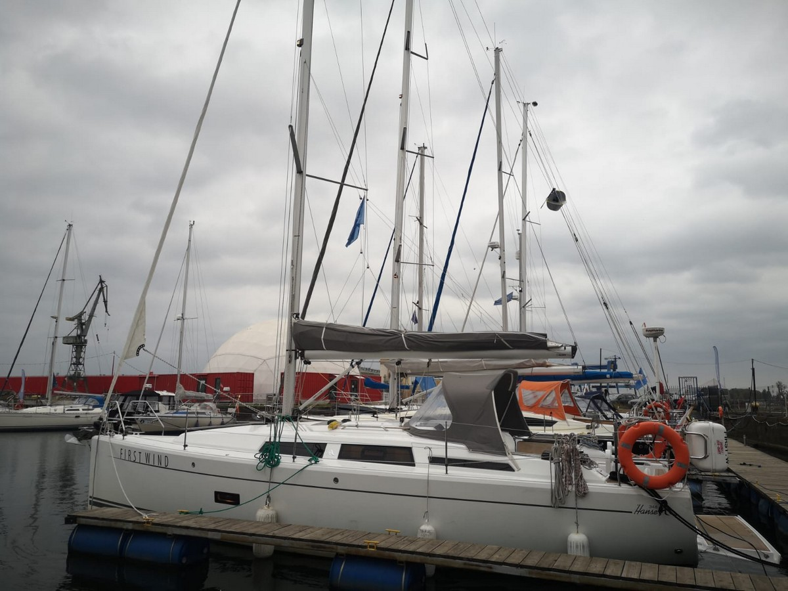

Czartej Jachtów - Morskich
BONAWENTURA
BONAWENTURA to jedna z najstarszych jednostek pływających pod biało-czerwoną banderą. Pierwotnie BONAWENTURA była kutrem rybackim, a następnie holownikiem. W 1992 roku została przebudowana na żaglowiec, o rzadko spotykanym osprzęcie żaglowym typu żebrowego, zwanym popularnie „Va Marie”. W latach 2010-2013 przeszła gruntowny remont i renowację, dzięki którym stała się jednostką przygotowaną na każdy rejs – morski i oceaniczny.
- Rok budowy/przebudowy/remontu generalnego: 1948/1992/2012
- Długość całkowita: 20 m
- Długość bez bukszprytu: 16.28 m
- Szerokość: 4.87 m
- Wysokość: 18 m
- Wysokość boczna: 3.00 m
- Zanurzenie: 2.10 m
- Powierzchnia żagli: 150 m²
- Liczba masztów: 2
- Ilość koi/toalet: 14/2
Bavaria 51
Bavaria 51 Cruiser, to kultowa jednostka czarterowa. Nowoczesny wygląd i funkcjonalność oraz ogromna przestrzeń w środku i w kokpicie gwarantują zadowolenie najbardziej wymagającej załogi.Jacht posiada 5 kabin – w tym jedną z łóżkiem piętrowym. Kabiny i łóżko rufowe są ogromne!Wielka mesa ma wygodne siedzenia wokół dużego stołu. Kambuz na prawej burcie w kształcie litery U z dwoma zlewami posiada dużą ilość schowków, pełno wymiarową lodówkę otwieraną frontalnie i oddzielną zamrażarkę.
- Rok produkcji: 2015
- Długość kadłuba: 15,54 m
- Szerokość całkowita: 4,61 m
- Zanurzenie: 2,25 m
- Liczba koi: 10
- Kabiny: 5
- Ilość koi/toalet: 10/3
- Ożaglowanie: grot, genua
- Silnik zaburtowy: Volvo
- Zbiornik paliwa: 280l
- Ster strumieniowy
- Zbiornik wody: 560l
Hanse 348
Nowy jacht w naszej flocie Hanse 348 popularny i używany na wodach całej Europy i świata.Jacht o wielkości niesprawiającej trudności w prowadzeniu i w manewrowaniu przez 2 osoby. Jacht ten posiada wyposażenie dogodne do rejsów rodzinnych jak i stażowych i szkoleniowych. Jacht ten posiada dzielność morska i można nim żeglować po morzach i oceanach.
- Rok produkcji: 2020
- Szerokość całkowita: 10,40 m
- Długość linii wodnej (KLW): 9,99 m
- Szerokość całkowita: 3,55 m
- Zanurzenie: 1,95 m
- Liczba koi: 8
- Kabiny: 3
- Wysokość masztu: 16,25 m
- Ożaglowanie: 58,50 m²
- Silnik zaburtowy: 21 KM
- Zbiornik paliwa: 160l
- Zbiornik wody: 210l
Kliknij na jacht aby zarezerwować